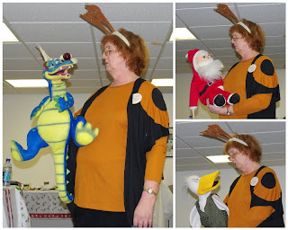

From Wilma Swartz: Here's some pictures of my Christmas show for all…
12/22/2009
{kind=link}

From Wilma Swartz: Here's some pictures of my Christmas show for all the heart transplant recipients and their medical team. My 6' ostrich, Sandy Twinkletoes, sang with The Sunshine Boys, a barbershop quartet that became a barbershop quintet. Huffenpuff the Dragon tried to convince the audience he was Rudolph with antlers and a blinking red nose until I got him to admit he was Rudolph's replacement since Rudolph was in Judge Judy's courtroom answering the charges for running Grandma over. Croc The Crocodile sung "A'' I Want For Christmas Is My Two Front Teeth. Cinnamon Stick sang a hymn to several HIMS. Even though this gig was a freebie, I got more wealth out of it than anyone could imagine. I even told the audience how ventriloquism and heart transplants have in similarity with Paul Winchell but I was extremely careful never to use the "D" word during this part because I didn't want anyone to think I was implying they were a "D".